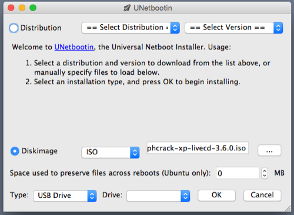
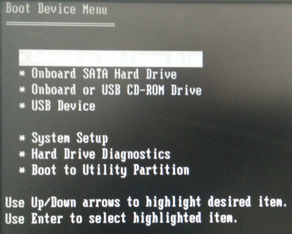

I was recently given an old PC that had multiple user accounts, all of which required passwords to log in. The friend who donated the computer to my cause gave me full permission to try and break into it, knowing there was no sensitive information contained on it. Having heard there were many tools available for recovering Windows XP passwords, I looked forward to discovering just how easy it would be.
The device
- Dell OptiPlex GX280
- OS: Windows XP Professional 32 Bit
- BIOS: A08 (03/03/06)
- Processor: Pentium 4 0F41 3.20GHz
- Memory: 2GB 400MHz DDR2 SDRAM
The tools
- 8GB USB Drive (you could probably go as small as 2GB)
- UNetbootin
- Ophcrack LiveCD (.iso)
The process
After trying a few different tools without success (all LiveCD ISO’s), I came across Ophcrack which worked surprisingly quick and easy. Ophcrack offers both an .exe, and a LiveCD .iso version, with options for Windows XP, Vista, and 7. If you’re just looking for the source code, and don’t want to use SourceForge, I’ve cloned it here for your consumption.
The host system I used for creating the LiveCD was OSX, as a MacBook was all I had on hand. I used a tool called UNetbootin to create the LiveCD on a USB drive. Using UNetbootin was a painless process; essentially you download the ISO you intend to boot from, start UNetbootin, select your image and target drive, then hit ok.

Once UNetbootin had finished creating the LiveCD on USB, it was ejected, and inserted into the target computer.
Selecting F12 upon starting this Dell machine took me to the boot menu, where I selected which device I wanted to boot from. “USB Device” was selected, which then took me to a menu where I could select the mode of Ophcrack I wanted to start.

I selected “Ophcrack Graphic mode - automatic” which then booted into a Linux based GUI, and automatically began running the Ophcrack tool.

For security reasons I won’t be posting images of the user names, hashes or passwords that Ophcrack uncovered. I will however tell you it took only 3 minutes and 38 seconds to produce 4⁄6 passwords and 6⁄6 user names. The passwords it failed to recover were for disabled accounts, which likely did not have passwords associated with them.
The data was displayed in a table with the columns: User, LM Hash, NT Hash, LM Pwd1, LM Pwd 2, and NT Pwd. All I needed was the User (user name), and the NT Pwd (password). I wrote all of the login options down, rebooted the computer into Windows and began attempting each of the provided login credentials. Delightfully, all of the user names and passwords gave me access to each user account, the most useful of which was obviously the Administrator account.
Disclaimer: I don’t condone cracking passwords for nefarious purposes. This was done with full permission from the original owner of the computer, and completed as a learning exercise. Immediately after gaining access I wiped the drive, and installed a flavor of Linux (obviously).